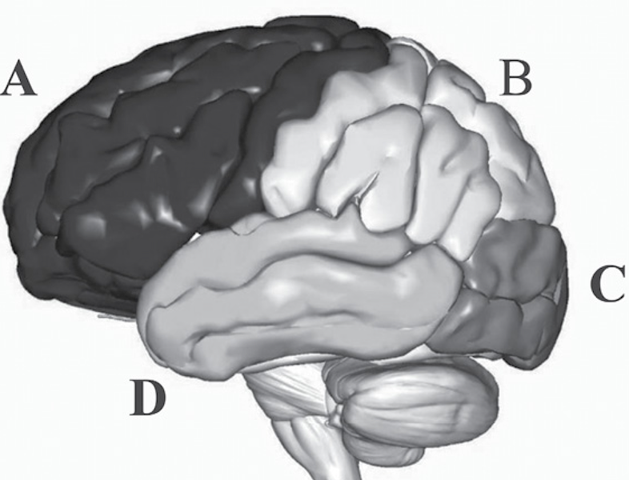

EIM07
Mózg a emocje
Krzysztof Basiński
Mózg - powtórka z rozrywki
Centralny/ośrodkowy układ nerwowy (CNS)
- Central nervous system
- Mózg
- Rdzeń kręgowy
Mózg
- Składa się z:
- Kory
- Śródmózgowia (m.in. wzgórze i podwzgórze)
- Pnia mózgu (do którego podłączony jest rdzeń)
- Móżdżku
Półkule i płaty

Obwodowy ukaład nerwowy
- Peripheral nervous system (PNS)
- Składa się z:
- Somatycznego układu nerwowego
- Autonomicznego układu nerwowego (ANS)
Autonomiczny układ nerwowy
- Dzieli się na:
- Współczulny UN: fight or flight
- Przyswpółczulny UN: rest and digest
Emocje w mózgu
Teorie historyczne
- Teoria Cannona-Barda i rola wzgórza
- Krąg Papeza (1937) jako ośrodek emocji (wzgórze, podwzgórze, hipokamp, zakręt obręczy)
Układ limbiczny

Teorie lokalizacyjne (locationism)
- Specyficzne części mózgu odpowiedzialne są za konkretne rzeczy
- Być może konkretne emocje “siedzą” w konkretnych lokalizacjach?
Ciało migdałowate (amygdala)
- Pełni kluczową rolę w lęku i strachu
- Badania na zwierzętach
- Pacjent SM z obustronnym uszkodzeniem ciała migdałowatego nie odczuwa strachu (a odczuwa inne emocje)
- Większa aktywacja ciała migdałowatego u osób z indukowanym strachem w fMRI
Wyspa (insula)
- Pełni ważną rolę w obrzydzeniu?
- U makaków elektryczna stymulacja wyspy powoduje ekspresję obrzydzenia
- U ludzi wyższa aktywacja wyspy przy indukcji obrzydzenia
- Pacjent z uszkodzeniem jednostronnym wyspy miał problemy z rozróżnianiem obrzydzenia i odczuwaj je rzadziej
Inne struktury
- Przednia część zakrętu obręczy (ACC) i smutek?
- Przednia przyśrodkowa kora przedczołowa (!), OFC (Orbitofrontal Cortex) i jej rola w gniewie?
Konstrukcjonizm
- Wydaje się, że mózg nie ma wyspecjalizowanych lokalizacji odpowiedzialnych za dane emocje (albo nie potrafimy ich znaleźć)
- Np. ciało migdałowate:
- Nie wszyscy pacjenci z uszkodzeniem cała migdałowatego nie rozpoznają strachu
- Być może ciało migdałowate odpowiedzialne jest za odpowiedź na zagrażające bodźce?
- Albo za odpowiedź na ogólnie ważne bodźce?
Konstrukcjonizm
- Zamiast tego emocje powstają na skutek działania sieci struktur mózgowych (neural network)
- Ta sieć składa się ze struktur limbicznych, ale też np. mPFC i struktur językowych
A co z półkulami?
- Przecież ludzie są prawo albo lewopółkulowi!?
- Nie są!
Hipoteza prawej półkuli
- Emocje są przetwarzane przede wszystkim w prawej półkuli
- Pacjenci z uszkodzeniami w prawej półkuli mieli problemy z emocjami
- fMRI i EEG nie pokazują zwiększonej aktywności prawostronnej w wyniku odczuwania emocji
Hipoteza walencji
- Negatywne emocje są przetwarzane z prawej a pozytwne z lewej strony
- Dlatego pacjenci z prawostronnym uszkodzeniem mieli problemy emocjonalne
- Wada Test: chwilowa, farmakologiczna inhibicja jednej półkuli
- Wada w lewej: nastrój depresyjny
- Wada z prawej: śmiech, radość, pozytywny nastrój
Dążenie-unikanie
- Dążenie do czegoś wynika z pracy lewej PFC
- Unikanie czegoś z prawej PFC
- To jest podobne do hipotezy walencji, z wyjątkiem gniewu
- Gniew jest negatywną emocją dążenia - i wiąże się raczej z aktywacją lewej półkuli
Problemy w badaniu mózgu
- Kwestie etyczne
- Przeniesienie wiedzy z gryzoni/kotów/małp na ludzi
- Ograniczenia metod neuroobrazowania (fMRI!)
- Ograniczenia metod neuropsychologicznych